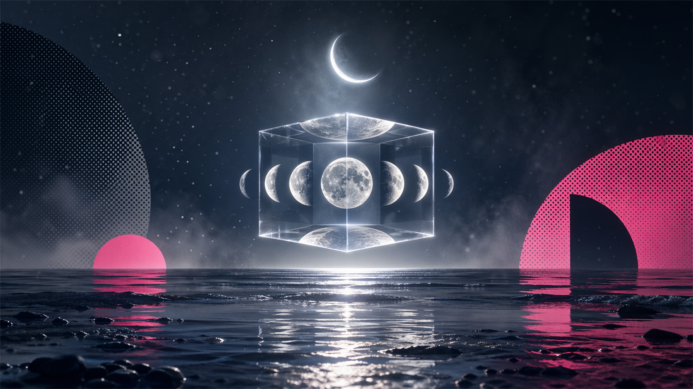
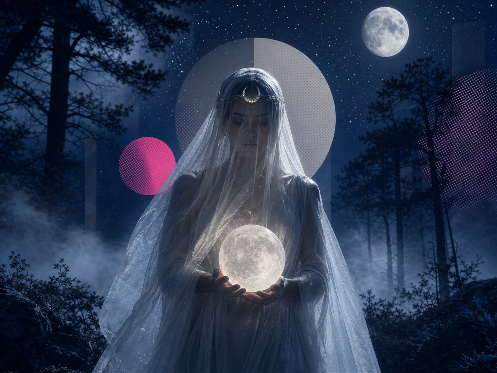

西洋占星情緒圖鑑
潛意識的操作系統｜情緒的原廠設定
28 種月相情緒 × 12 星座 × 45 相位

月神原型
月亮在神話中以三種面貌現身，對應你內在的三個情緒層次
Selene — 滿月女神
完整、豐盛、情感的圓滿。她代表你在親密關係中的渴望：被全然看見、不需要隱藏任何一面。滿月時你的情緒最透明，想說的話藏不住。
Artemis — 新月女神
獨立、邊界、自我主權。她提醒你：情緒不需要外界許可。新月是內在播種的時刻，你最清楚自己真正想要什麼，不受他人眼光影響。
Hecate — 暗月女神
無意識、陰影、轉化。她掌管你不願承認的情緒角落——那些藏在夢裡、偶爾在深夜浮現的感受。與暗月同行，意味著進入自己的地下室。
情緒核心隱喻
太陽是你給世界看的應用程式，月亮是底層的作業系統——那個決定你如何感受、如何被安慰、如何找到安全感的核心程式
月亮落宮
宮位告訴你：你的情緒能量投注在哪個生活場域，以及你從哪裡汲取安全感
情緒即身份
你的情緒直接寫在臉上。心情即是你的第一印象，難以偽裝。
安全感 = 物質基礎
金錢與物質是你的情緒穩定器。帳戶數字會直接影響你的心理狀態。
說話是情緒釋放閥
你需要把感受說出來、寫下來才能消化。沉默對你來說是一種折磨。
家是情緒的充電站
月亮在自己的宮位，情緒能量最純粹。家庭、根源是你最深的安全感來源。
玩樂是最好的情緒療法
你的情緒需要被「表演」、被看見、被欣賞。創作和玩耍是你的情緒出口。
焦慮化為身體訊號
情緒壓力會直接轉化為身體症狀。「有用」和「被需要」是你的安全感來源。
關係是情緒的鏡子
你的情緒狀態高度依附於關係的品質。一個人時難以確認自己的感受。
深層情緒的黑洞
你的情緒世界非常深邃，表面平靜下是洶湧的暗流，輕易不示人。
意義感是情緒燃料
你的情緒需要「意義」作為燃料。沒有方向感時，情緒會快速崩潰。
成就感是情緒錨點
你的情緒健康與社會成就高度捆綁。在意他人評價，難以忽視公眾目光。
同溫層是情緒充電站
你的情緒安全感來自於找到「同類人」——被群體接納比個人關係更重要。
情緒沉入海洋深處
你最深的情緒連自己都感知不到。情緒在夢境和孤獨中流動，需要獨處才能充電。
月亮星座
星座決定月亮的「表達語言」——相同的情緒，用完全不同的方式處理
火象
情緒原型：衝動的戰士。情緒來得快去得也快，需要立即行動來釋放張力。
情緒模式：憤怒是最快出口，但不帶惡意。受傷時會用攻擊性掩蓋脆弱。需要自主，被控制會激發強烈反抗。安慰方式：給空間，不要分析，讓他去跑步。
名人實例：碧昂絲（Beyoncé）月亮牡羊——她的舞台爆發力與情緒直擊感，正是牡羊月亮的生命力。
土象
情緒原型：穩定的守護者。月亮在金牛入旺，情緒最為穩定紮實，是圖鑑中的 SSR。
情緒模式：情緒變化緩慢但持久，一旦受傷很難快速修復。通過感官享受（美食、觸摸、美景）獲得安撫。不喜歡突然的變化，需要穩定的例行程序。
名人實例：比爾·蓋茨月亮金牛——他長達數十年不變的生活習慣與穩定感，是金牛月亮情緒穩定性的最佳展現。
風象
情緒原型：情緒的旁觀者。會把自己的感受智識化，需要語言才能確認情緒存在。
情緒模式：情緒多變，一天可以高低起伏數次但不覺得有問題。通過說話、寫作、學習來消化情感。難以長時間停在一種感受中，也容易迴避深層情緒。
名人實例：梅莉·史翠普月亮雙子——她在詮釋角色時的情緒變化速度與智識距離感，正是雙子月亮的特質。
水象
情緒原型：情感的容器。月亮在巨蟹入廟，情緒感知力最強，幾乎是純粹的感受體。
情緒模式：情緒記憶超強，過去的傷痛鮮明如昨日。極度保護自己（外殼堅硬，內在柔軟）。需要被照顧，同時也以照顧他人滿足情感需求。
名人實例：黛安娜王妃月亮巨蟹——她對人類苦難的深刻感知與無條件的情感給予，完美展現巨蟹月亮的情感深度。
火象
情緒原型：情緒的舞台表演者。需要感受到自己的情緒是重要的、值得被見證的。
情緒模式：情緒強烈且需要被欣賞。對批評極度敏感（尤其是對「創作」的批評）。愛的語言是誇獎與肯定，被忽視比被批評更難受。
名人實例：瑪丹娜月亮獅子——她對舞台掌控和情感戲劇化的追求，以及對「被看見」的強烈需求，是獅子月亮的教科書。
土象
情緒原型：焦慮的分析師。把情緒轉化為待解決的問題，通過「修正」獲得安全感。
情緒模式：傾向過度分析自己的情緒（「我為什麼會這樣感覺？」）。服務他人是情感表達方式，焦慮時通過整理、計劃、完善細節來控制情緒。
名人實例：奧巴馬月亮處女——他冷靜分析、精準措辭的情緒表達風格，以及對細節與準確性的執著，是處女月亮的典型。
風象
情緒原型：和諧的尋求者。害怕衝突，需要在關係中找到情緒的平衡點。
情緒模式：難以做決定，因為每個選擇都牽動情感天秤。需要美麗的環境和和諧的人際關係。會壓抑不舒服的情緒以維持「沒關係」的表象。
名人實例：約翰·藍儂月亮天秤——他一生對和平與愛的追求，以及在創作中呈現的矛盾與美感，是天秤月亮情緒本質的展現。
水象
情緒原型：情感的深海潛水者。月亮在天蠍落陷，情緒強度最高，是圖鑑中的高難度角色。
情緒模式：極少主動表達情緒，但內在翻騰不止。控制感是安全感的來源，害怕被掌控或背叛。情感傷痛有長達多年的記憶，但轉化後有驚人的復原力。
名人實例：查理茲·塞隆月亮天蠍——她在電影中詮釋黑暗心理的精準度，以及在現實生活中的情感保護性，正是天蠍月亮的投影。
火象
情緒原型：自由的冒險家。情緒需要廣闊的空間，被束縛時會感到窒息。
情緒模式：樂觀、不記仇，但難以在深層悲傷中停留。通過旅行、哲學、戶外活動調節情緒。承諾感會帶來情緒焦慮，需要自由感。
名人實例：泰勒絲（Taylor Swift）月亮射手——她一直以來的情感表達方式，從一段感情跳到下一段，都帶著射手月亮「向前看、不回頭」的衝動。
土象
情緒原型：情緒的管理者。會把感受放在目標之後，情緒被嚴格自我管理。
情緒模式：不輕易表現脆弱，認為情緒化是不成熟的。通過達成目標、積累成就獲得情緒滿足。容易壓抑情緒到身體出問題。
名人實例：大衛·鮑伊月亮摩羯——他嚴格的自我塑造能力、以藝術形式昇華個人情緒，以及對事業的高度控制感，是摩羯月亮的縮影。
風象
情緒原型：情緒的異類。傾向「觀察」自己的情緒而非「沉浸」其中，有時讓人覺得冷漠。
情緒模式：需要情感獨立，排斥依賴。通過人道主義關懷、理念認同表達情感。個人情緒經常轉化為對社會的觀察，難以處理一對一的親密情感。
名人實例：安潔莉娜·裘莉月亮水瓶——她將個人情感升華為全球人道關懷的模式，以及公開場合情緒的疏離感，是水瓶月亮的典型表現。
水象
情緒原型：情感的海洋。沒有邊界，與宇宙連通，情緒與他人、與環境融為一體。
情緒模式：極度共情，容易「吸收」他人的情緒當作自己的。需要通過藝術、夢境、靜心來辨識自己真實的感受。容易有不切實際的幻想來逃避痛苦現實。
名人實例：芭芭拉·史翠珊月亮雙魚——她的歌聲能讓整個場館的觀眾流淚，那種無邊界的情感傳遞，是雙魚月亮最純粹的表現。
月亮相位矩陣
月亮與九大行星的對話，決定你情緒能量的流動方式
真實案例解析
從真實人物的情緒模式，驗證月亮星座的作用
月亮♒ 水瓶 · 太陽♋ 巨蟹
月亮水瓶的矛盾性在黛安娜身上展現得極為清晰：她有巨大的情感需求（巨蟹太陽），卻用水瓶月亮的方式表達——將個人痛苦轉化為公眾使命，擁抱愛滋病患者、反地雷運動，把私人情緒昇華為人道主義行動。這正是水瓶月亮的「情緒外包給全人類」機制。她的「如果我愛你，全世界都要知道」的情感表達方式，對比她私下深刻的孤獨感，是水瓶月亮與巨蟹太陽衝突的最佳案例。
月亮♐ 射手 · 太陽♋ 巨蟹
月亮射手最需要「下一個目標」來維持情緒穩定。馬斯克的情緒模式非常典型：他不能停下來，一旦一個目標（Tesla、SpaceX）上軌道，立刻需要下一個更大的挑戰（Twitter/X、火星殖民）。射手月亮的情緒安全感來自「還有更遠的地方可以去」。他的情感表達也是射手式的——大膽、毫無過濾、不計後果。被束縛或被限制時的反應激烈，也是射手月亮的特徵。
月亮♈ 牡羊 · 太陽♐ 射手
月亮牡羊的即時情緒能量，結合射手太陽的自由意志，造就了碧昂絲獨一無二的舞台魅力。牡羊月亮讓她的情緒直接轉化為行動——《Lemonade》專輯把個人婚姻危機直接投射成視覺藝術，這種「受傷了就立刻反擊」的模式，是牡羊月亮的本能。她的憤怒不是冷靜的報復，而是即時的、充滿火焰的自我宣告。
情緒天氣 Gacha
每日一抽，探索你今天可能遭遇的情緒天氣
情緒圖鑑
28 種月相情緒 × 12 星座，點擊卡片收集，解鎖完整圖鑑說明
記錄你的月相情緒日記，連續打卡解鎖徽章
月亮能量實踐
播種意圖
寫下這個月你想在情緒上有什麼改變。不是目標，是意圖。例：「我願意練習在憤怒中停頓 3 秒」。
行動與挑戰
意圖遭遇第一個阻礙。這是真正的測試：你的情緒模式會在壓力下現形。記錄是什麼讓你退縮了。
顯化與看見
情緒最透明的時刻，壓抑的感受會自動浮現。不要試圖控制，讓它出來。也是釋放舊有情緒模式的最佳時機。
收穫與感謝
這個月你的情緒旅程帶來了什麼洞察？不管是好是壞，每個情緒都是資料。下弦月是整理這些資料的時機。
胸口緊？喉嚨卡？腹部沉？身體比大腦誠實。
繞過語言的直接通道，讓右腦說話。
憤怒保護邊界，恐懼保護安全，悲傷保護連結。